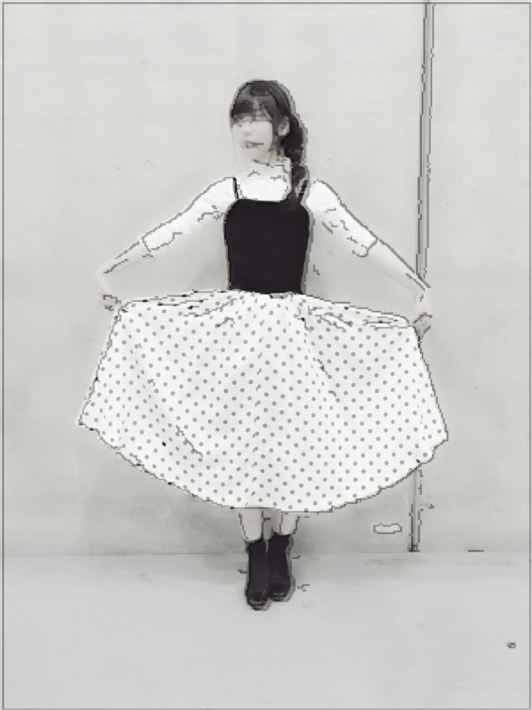
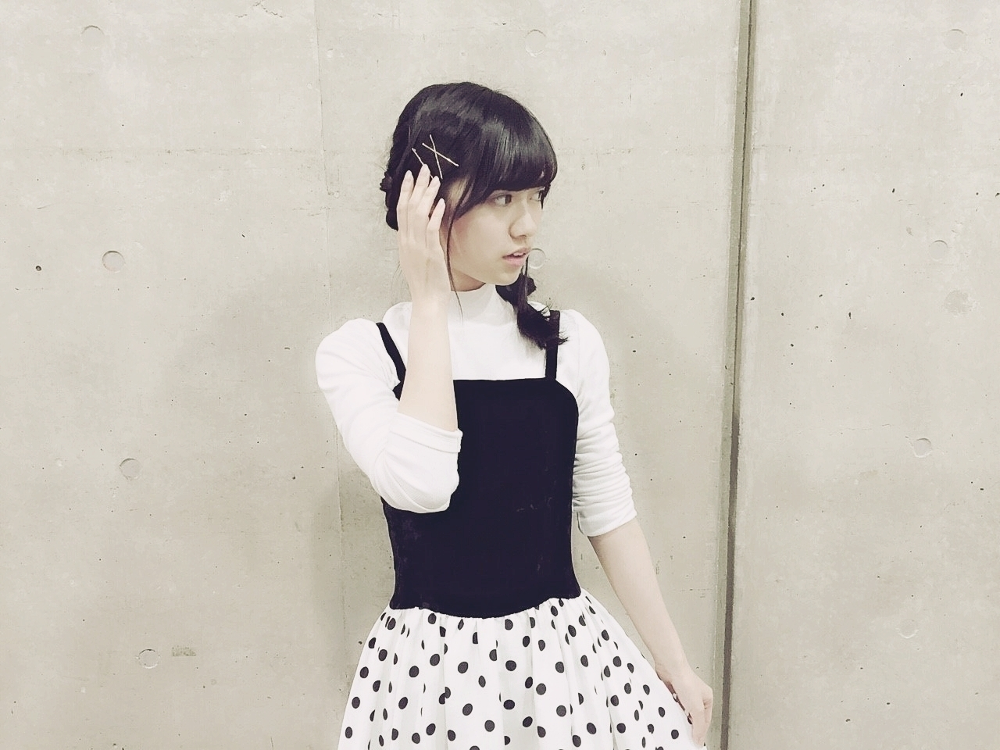
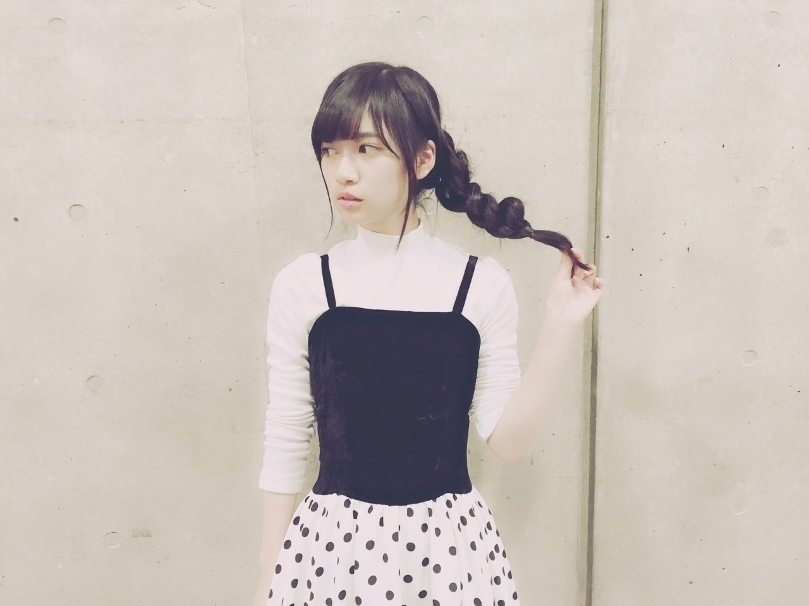
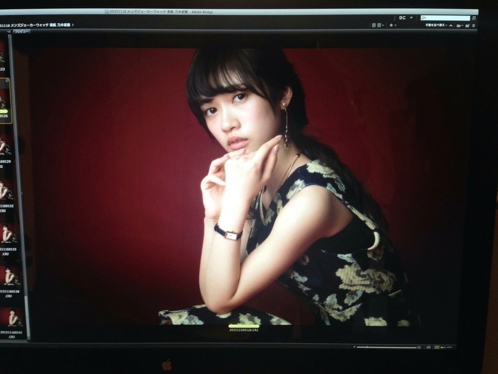

2016/0222Monだカラ
乃木坂46お誕生日おめでとう✨
めでたい
めでたい
待機時間にて
ウインク下手くそか、、、
13枚目の制服もそろそろお別れかな
こんな笑ってるの珍しい
本日は乃木坂の日です
そして、BirthdayLiveのかわりに今年は46時間TVをやりました
まだ高校生の為
エンディングとかには
参加できませんでしたが
動画でみてました(^ｰ^)
ラストの生田さん
私もラストまで参加したかったなーって
早く大人になりたいと思っちゃいました
そんな46時間無事に終わってよかった
スタッフの皆さんに感謝
メンバーもお疲れ様です！
ファンの皆さんも
46時間付き合ってくれてありがとうございました！
ちなみに46時間全部見たよーって方どのくらいいるのかな気になる
色んなコラボ企画とかあったりと
関わってくださったすべての人に感謝してます
本当にありがとうございました✨
46時間もあったので
2期生もたくさん出る機会があって
この子ってこんな子なんだって新たな面を見て頂く機会が多くて嬉しかったです
絢音ちゃんが地方からちはるさんとかりんのわんこ蕎麦レポートをしてるときとか
今話させたい誰かがいるの
伊織の見た目でクールに見られるけどふわっとした
可愛らしい喋りとか
私も46時間TVで
食べてるシーンを日村さんばりに頑なに隠していたのに公開してみたり。笑
なにより、LIVEで
ボーダーを披露できたのが
よかった
ちょうど去年の今日
2月22日に当時研究生だった6人が昇格して
ちょうど1年目に
成長したボーダーが披露できたかなっと、、、
自分で成長したとか
よくわからないけど
私からみたら他の5人
すごく成長したなーって
思います✨
乃木坂46としては
3年目ですが
乃木坂46の
正規メンバーとしての活動は
本日でまる1年です
3期生募集とのことですが
まだ皆がどう思ってるとか
自分自身もなんとお伝えすればいいのか
わかりませんが
きっとどう考えているか気になる方もいると思うので
自分は後輩でもあるけど
先輩になる立場の人間になります
いい経験になればなっと思います
でも、そういう言葉で縛られるのではなく
私は
一人の人間として接したいです
ｰｰｰｰｰｰｰｰｰｰｰｰｰｰｰｰｰｰｰｰｰｰｰｰｰｰｰｰｰｰｰｰｰｰ
46時間楽しかったです(^ｰ^)
来年どうなってるか
わからないけど
またやりたいなって私は思います
ほんとうに
46時間濃ゆすぎて細かく書きたいけど
それはモバメで書こうかな
では、
改めてお誕生日おめでとう✨
1年前くらいの画像でお別れです
1年前も変わらす花組ポーズ
来年このブログ読んで懐かしいなーってなりたい
世界中へピース
大きくなるぞ
2016/02/22 21:30｜個別ページ｜コメント(1452)
2016/0219Fri元からmidnight
どうも
おはようございます
こんにちは
こんばんは
まだまだ寒いです
体調にはお気をつけて
安全、健康第一

寺田蘭世です
宜しくお願い致します✨
最近この数回のブログでこのキラキラ✨にハマってます
本当は薔薇の絵文字みたいなのを使っていたのですが
ブログやモバメだと
表示されてないものらしくて
でも、このきらきらちゃん✨は表示されるんです
きらきらちゃん✨
よかったら皆様もどうぞ
使ってみてね(^ｰ^)

コメントお返事○
○この間たい焼き食べたんだけどらんぜは頭から食べる派？それとも尾から食べる派？
すごいどーでもいい質問だけど気になりました笑
→コメントありがとうございます！
どうでもいい事ないです
むしろわざわざありがとう(^ｰ^)✨
私は多分ね
尻尾から派だったと思います
最近食べてないから忘れちゃった
たい焼き食べたくなっちゃいました
たい焼きたい焼き焼き焼き
たい焼き
○蘭世ちゃんのコスプレ
すきなので もっとたくさんやってほしいです♡
→ありがとう！
このコメントも多かったのでまたコスプレを存分に披露できる個別握手会とかでやりますね
ちなみに、全国握手会は制服です
個別はみんな私服なんですよ
初めての方用に書いときます！
また、決まったら告知するね(^ｰ^)
そろそろメイド服やりたいね14枚目中にやりますね！
○バレンタインデー私は今年受験で潰れました(TT)
受験が近づいてる(泣)
後悔ないようがんばります！
またコメントしま〜す♪
→バレンタインは生きていればきっとまた来るイベントだっ！
受験は1度きりのチャンスだっ！
後悔しないよう頑張れ( `-´ )！！！
応援してます
ちょっと熱血系に応援してみた。笑
また、時間あるときや息抜きにコメントしに来てね
待ってます
○大人への近道
ずっとループして聴いてるよ！
蘭世の声が大好きです！
また、新しい曲がリリースされると嬉しいな(^-^)
→ありがとうございます
声好きって言ってもらえるのすごく嬉しいです
またあったらいいですね！！！
○ウチは花組の柚香光さんがすき～
でもまだまだ新参者やから
団員さんの名前と顔まだ詳しくないんよなw
蘭世は誰がすきなんやっけ？
→コメントありがとうございます！
私はよくブログにも書いてるんですが
月組の朝美絢さんです
花組なら水美舞斗さん
基本的に95期ご贔屓ですm(._.)m
柚香さんも95期でしたよね
柚香さんも美しすぎて辛いです
あの、宝塚大運動会のときの柚香さんの美脚、、、
素晴らしかった
今度ヅカトークしたいですね！
コメント待ってます！！
○ソニレコ見たよ～
ぷるてん可愛い！！可愛すぎる！！
前回のときはまだ蘭世のことあんまり気になってない時期だったから、今回しっかり見れてよかった(´▽`)ノ
喉さん元気でよかったー！これからも風邪には気をつけてね。
→なんかすごく嬉しいです
収録自体は約1年くらい前で
興味持っていただけて良かった
こう言うのすごく嬉しいな
これからも宜しくお願い致します(^ｰ^)
○らんぜちゃんこんにちは！！
エリザベートかっこいいです...！！！
わたしは明日海さん推しでまだ明日海さんのエリザベートみたいです...！オススメの宝塚ありますか？
→わー！
トート閣下のコスプレ褒めてくれてありがとう
めっちゃ嬉しいです(^ｰ^)
明日海さんご贔屓なんですね
明日海さんご贔屓さんなら
アリスの恋人なんていかがでしょう
私もすごく好きな作品です
ホントおすすめです
観たら語りましょうね
約束ですよー✨
○乃木坂工事中のバレンタイン企画も楽しくて佳きかな。さゆりんご軍団の活動もがんばってください（笑）。
→ありがとうございます
さゆりんご軍団
本格的に活動したいですね
755に載せるよ〜って
松村さんの携帯で動画とってもらいました
さゆりんご軍団を機に
今まで松村さんって呼んでたんですが
りんごって呼んでって言っていただけて
りんごさんから
はじめていきたいなと思っております✨
ちなみに、私の役割は監督です
さゆりんご軍団監督です
監督監督
監督は皆のプロデュース
写真とるのとか好きなので
みんなの事より可愛く撮りたいっと思い
監督になりました
宜しくお願い致しますm(._.)m
○らんぜはだれかにバレンタインあげるのかな？笑
→もらったらお返しします
一昨年くらいは
2期生には配ったな
なんか、私の手作りなんて
欲しい人いるのかって
いつも疑問に思って
気がひけちゃって、、、
だから、頂いたら
お返ししようってくらいに
おさえておりますm(._.)m
昔からそうなんだ
○蘭世にチョコもらいたーい！
→くれたらお返しはしますよ絶対に！！！！
来年まってます！
本当に
本当に欲しい( `-´ )？
いつもコメントありがとうございます
読むの楽しいから
気軽にコメントしてくださいね(^ｰ^)
待ってます✨
コメント返しは
ちと遅れたバレンタイン
来年に期待ではなく
来世に期待してみる
（我ながらあまり意味がわからない）
今時は逆チョコとかも
あるから
チョコ貰えるかしら
モテモテ( `-´ )！
新制服


そうだった
大切なこと書き忘れるところでした
かりんたんの作った
かりんとう饅頭うまかーでした
本当に
あれなら100個は余裕だな
勿体無くて
大切に1つをとっといたら
いおりに
それ食べないのって狙われました、、、笑
いおり可愛い
いおり可愛い
いおり可愛い
かりんたんの
かりんとう饅頭ありがとうございましたm(._.)m
真夏さん
みおな
もありがとうございました
大変美味しく頂きましたm(._.)m
乃木坂46デビュー4周年を記念したインターネット番組「乃木坂46 4th Anniversary 乃木坂46時間TV」の配信が決定いたしましたですますですます！！！！！
どうなるのでしょうか、、、
46時間起きてるのだよ！
すっぴんでさようならです✨
2016/0211Thu告白
2月ですね
世はバレンタインですね
女の子がんばれ！
男の子もがんばれ！
私は、甘いのもの大好きだから
色々なチョコが街中に溢れる季節は楽しいです
バレンタイン限定とか多いしホント甘いもの好きな人ならバレンタインは楽しいイベントだと思います
でも、結果マシュマロって
最強だなって思う
寺田蘭世です
でも、クッキーも大好きで
凄く前に絢音ちゃんと
クッキーを食べまくる会を開きたいってそう言えば約束したなー
でも不意に
マカロン

撮影で頂きました！
過去のブログを見てくださっていたらしくそれで
マカロンを差し入れして下さったそうです
本当に嬉しかったm(._.)m
ｰｰｰｰｰｰｰｰｰｰｰｰｰｰｰｰｰｰｰｰｰｰｰｰｰ
ソニレコ！暇つぶしTV
今月お当番の「ぷるてん」こと寺田蘭世です
ぜひ、ソニレコさんを
観てください(^ｰ^)
私もYouTubeで見ました
あの新しいオープニングの曲好きなんですよね
そして高山さんと深川さんのときに1回お当番で参加した事あったのですが
あの日は声がガラガラで
喋りたくても喋れなくて
もどかしい思いをしました
でも、今回は喉さん元気でした(^ｰ^)✨
Kさん
中元さん
能條さん
ありがとうございました
楽しかったです
ぜひ、皆様チェック
宜しくお願い致します✨
2/9 ボムさん
UTB＋さん
2/10 MARQUEEさん
2/22 BRODYさん
2/24 B.L.Tさん
2/29 BUBKAさん
そして、本日は
乃木坂46紅白SP!拡大版にて
大人への近道をフルverでの
放送です
本当に有り難や
しかも、収録前や後に
「サンクエトワール皆さんです」っとスタッフさんがご挨拶してくださったのを聞いて
いつもなら乃木坂46なのに
サンクエトワール
改めて、なんかいいなーって
サンクエトワールのおかげで沢山色々な経験をさせて頂いたし
ユニット名をらじらーさんでつけてもらってから
公式的に名前のあるユニットって
乃木坂の中では珍しいし
より愛着がわきました。
大きな声ではっきり大好きだったとか言える人じゃないから伝わりにくかっただろうけど
私は多分この世で1番サンエト好きでしたよ
とても、大好きです
私に沢山チャンスの場を与えてくれた勉強になった
前も書いたけど
4人にもすごく感謝してるし
サンエトに関わってくださったすべての方に
感謝感謝感謝感謝感謝感謝感謝感謝感謝感謝感謝感謝、、、してます！
とりあえず、告知をっと思いまして！！
他にも
収録や撮影まだ解禁できてないものが
大変ありがたい事に
沢山ありますのでお楽しみに待っていてください
また解禁されたら
感想とか書きます(^ｰ^)
乃木中、、、
前半戦面白かったですね
2期生皆で出させて頂けて
初めての企画で
新鮮味があって楽しかった
です
飛鳥さんのくだりは
自分もちょっと泣いちゃいましたm(._.)m
だからよーく観ると
後ろの寺田蘭世目が赤くなってるシーンがあります
後ろからテラダも
チェックですっm(._.)m
ｰｰｰｰｰｰｰｰｰｰｰｰｰｰｰｰｰｰｰｰｰｰｰｰｰ
宝塚歌劇団102期さんに
蘭世さんがいる、、、？！
男役さん？
るろうに剣心観に行きたいですm(._.)m
懐かしのエリザベート コス
トート閣下が笑ってみた
気になる人は
過去のブログを、、、
一昨年くらいのHalloweenです
懐かしいですm(._.)m
さらばじゃ
（前回のブログのコメントを読んでいていろんな趣味があるんだなーって参考にさせて頂きます(^ｰ^)色んな事をやってみたいです）
2016/02/11 13:48｜個別ページ｜コメント(1061)
2016/0208Mon美味と意味
おはようございます
薬の錠剤が飲めないのが悩みで17歳にもなって
っと思ったら
この前フリスクを食べてみたら余りにも辛くて
粒を飲み込んでしまいました、、、
あれ、
私も玉飲めるんだなって！！！！！
成長したなと感じる瞬間がありました！！！！
ｰｰｰｰｰｰｰｰｰｰｰｰｰｰｰｰｰｰｰｰｰｰｰｰｰ
握手会in東京
朝早くからありがとうございます！
当日は雪の心配もありましたが都内は雨ですみました。
地方から来てくれた方は雪降ってたよーって話を聞いて
来てくださった皆さんへ
皆さんお足元の悪い中
本当にありがとうって心から思いました
改めて、ありがとう( . .)"
来てくれた人には
凄い伝わったと思うけど
私朝からテンション凄く
高かったですよね、、、( . .)"
なんかねﾆﾔﾆﾔ
楽しかったね♪
そんな握手会in東京の私服はこちらでした
今回は黒白で全部統一
1、2部
ごめんなさい
写メとる前にお着替えしちゃいました
ワンピースのお店の名前は
Ank Rougeさん✨のお洋服でした
3部
白黒
古着屋さんにて1900円くらいでお買い上げよき♪
レトロな感じが可愛くて
即決でした
あと、サイズ感もぴったりで運命的なワンピースです
靴も実は1部と2、3部微妙に違うお靴を履いてました
気づいてくれた方は
3人位だったかなぁ( . .)"
細かいところも変えてたりするので間違え探しみたいに探して下さい( . .)"
髪型とかお洋服変えた時に
褒められたり気付いてもらえるとすごく嬉しいです( . .)"
今回も楽しい時間を
ありがとうございました！


ｰｰｰｰｰｰｰｰｰｰｰｰｰｰｰｰｰｰｰｰｰｰｰｰｰ
コメント返しショートver
○ここで突然質問ですが、世界中に散らばった7つの使いかけリップを集めると何か願いが叶うのでしょうか？
→それ、ドラゴンボール、、、
願い事は叶わないかなどうなんでしょう
でも、落ちてましたよ寺田さんって人に返してくれたらこの人いい人だなって感謝します( . .)"
○握手会でまた質問する！笑
質問返しで蘭世ちゃんのこともっと知れたよ～！この企画良きです○
→ありがとう！
コメント返しとかって
長いからだら見しがちかもですが
よーくみたら細かな情報までいっぱい載ってるからね！
良き企画褒めてくれて
ありがとう( . .)"
○らんぜさま~！！
学生初投稿宜しくお願いします！！
いつも陰ながら応援してます！
大人への近道のらんぜめっちゃ可愛くて大好きです(^-^)/
毎日通学中はこのＰV見ながら電車に乗ってます！
これからも活動頑張ってねぇ！
ちなみにらんぜの好きな乃木坂のpvはなんですか？
→ありがとうございます
ありがとうございます
ありがとうございます！
すごく嬉しいです
学校頑張ってな！
好きなMVは
「制服のマネキン」です
初めて見た時に衝撃的でした
あのMVをみて
乃木坂に入りたいって思えたので好きです
オーディション前の曲なので参加はもちろんしてませんが
私にとって大切な作品です。
前回のブログ
沢山のコメントいつも
ありがとうございます！
初めてコメントしてくれた方やいつも書いてくださってる方
たくさんの方の思い、意見を身近に感じられる
コメント欄は
大切な場所です！
いつもコメントを読んで
一喜一憂しております！
これからも
楽しみに待ってます！
ご気軽にどうぞ(^ｰ^)
っという事で逆に私から質問です！
・好きな色は？
・趣味は？
くだらない質問かもですが
最近、色彩検定のアプリを暇な時間にボケーッとみてて
色んな色があるんだなーって改めて知って
そう言うのに興味があるから暇な時間も有効活用できてよきかなーっと
だから、皆さんの好きな色がきになりました！
そして、趣味について質問したのは
なんとなく！！！
ファンの皆さんのコメントとか読んでて
新たな世界が見れるんです
だから皆さんの趣味を聞いて私も新たな趣味を探す参考にしようかなと(^ｰ^)
よかったらお願い致します！
ｰｰｰｰｰｰｰｰｰｰｰｰｰｰｰｰｰｰｰｰｰｰｰｰｰ
何か書こうと思っていた事
忘れてしまいましたm(._.)m
あわあわわ
腕時計自分の去年の夏のツアーあたりから使ってる赤い腕時計ちと、ベルトがぼろぼろになってきました。
こまったさん

不意に過去のオフショット
また、不意に過去のオフショット、、、
載せます(^ｰ^)✨
さらばじゃ✨です
ｰｰｰｰｰｰｰｰｰｰｰｰｰｰｰｰｰｰｰｰｰｰｰｰｰ
あ、そう言えばですね
川村さんから
お洋服頂きました(^ｰ^)
凄く嬉しいです(^ｰ^)
しかも理由が
「らんぜぽいって思ったから」っと
その思ってくれたお気持ちだけでもとても嬉しいのに
本当にありがとうございます(^ｰ^)うれしいたけ
川村さんとは
お洋服とかの趣味合う気がするんですよね
よく、可愛いと思うものが一緒なのと
サイリウムカラーも
紅白カラーでお揃いなんです
握手会で着る予定です
皆さんに自慢したい。にや
14枚目握手会で着る予定です
またいつ着るか決めたら
ご連絡しますね✨
川村さん
本当にありがとうございます✨
ｰｰｰｰｰｰｰｰｰｰｰｰｰｰｰｰｰｰｰｰｰｰｰｰｰ
では、皆様
本当に
さらばじゃ(^ｰ^)
2016/0202Tue●
過去のブログを読んでいました。
こんな事が書いてありました
13枚目シングル期間もそろそろ終わりますが
皆さんから見た
私は今回の期間どう見えましたか？
私にとって13枚目期間は
色々なことをようやく経験出来た
とても充実したシングルでした
モバメで送りましたが
ごめんねっていうのも
違うかなって
ファンの皆様に逆に失礼なんじゃないかと
誰のせいでも無い
誰も悪いことしてないし
どう表現すればいいのか
やはり文章だけでは
伝わりきれないかもですが
いつも応援して下さる
皆さんには
ほんとに感謝します
こういう事があるからこそ
支えられてるなと
より、感じられます
ありがとう

うん！
昔から変わらない気持ちです
加入したその瞬間から変わらない何かを持っています何があっても私は乃木坂が大好きだし乃木坂以外考えられないですし
アンダーだって
なんだって成長できます
ここに来て研究生期間が長くて良かったって、私はすごく思うよ
もどかしい事って
沢山あると思います
このブログを読んでくれてる方の中にも
どういう経緯であれ
もどかしいって気持ち経験したことある人いっぱい
居ると思います
でも共通するのは
ここで下るのか
上るのかは
自分次第です
こんなこと言ってますが
弱気な部分のほうが
多いです
でも、奮い立たせるため
前を向きます！
前を見ないと広く見ないと
チャンスを掴めません
14枚目です！！！！！！！！
宜しくお願い致します
ｰｰｰｰｰｰｰｰｰｰｰｰｰｰｰｰｰｰｰｰｰｰｰｰｰ
ちなみに
選抜発表後
すぐに気持ちを書きたかったので自分のブログのコメントの欄に気持ちを書きました
焦り過ぎて( `-´ )
間違えましたが、、、( `-´ )
こういう所が私らしいなって
スーパーぶきっちょ( `-´ )
見守ってください
限られた時間の中
一緒に歩きましょう
2016/02/02 20:42｜個別ページ｜コメント(1190)